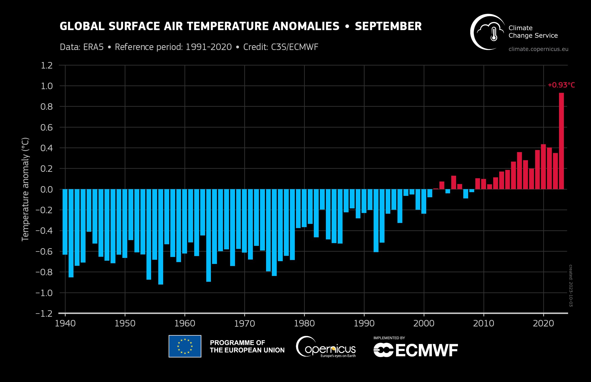
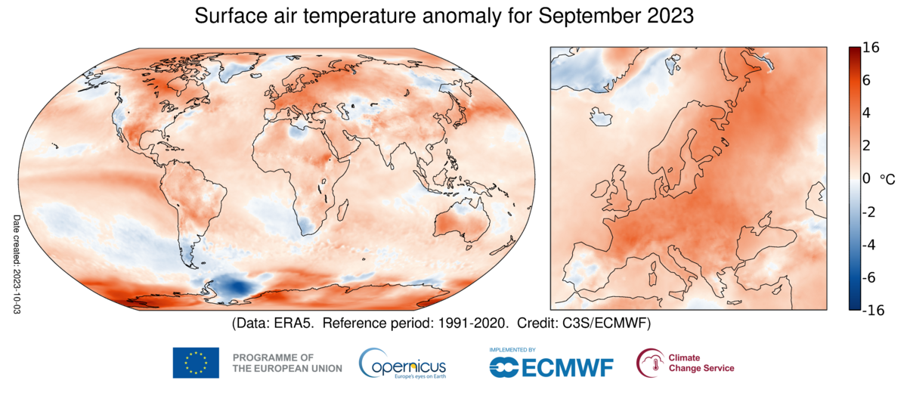

Climate Change and Environment
This module introduces students to the politics, sociology, and economics of the environment and climate change. Topics covered include the changing public opinion on climate change, the social bases of pro-environment behavior, the prisoner dilemma and tragedy of the commons, and the challenge of designing effective policy responses at the national and international level. Moreover, we investigate the role of public opinion and social movements in shaping environmental policy. Finally, we consider the unequal economic and social impact of climate change, including distributional aspects and consequences of extreme weather events.


Module Outline
Lecture 0: Introduction to Climate Change and Environmental Politics
- Overview of the module
- Importance of understanding climate change and environment for social scientists
Lecture 1: The Science of Climate Change
- Measuring and modeling climate
- Evidence of anthropogenic climate change
Lecture 2: Population, Climate, and Policy
- Human population and its impact on the environment
- Individual ecological footprint
- The effect of climate change on population dynamics
Lecture 3: Impacts of Climate Change
- Air pollution and health
- Extreme weather and health
- Climate change and economic activities
Lecture 4: Extreme Weather Events and Climate Adaptation
- Consequences of extreme weather events
- Climate adaptation and resilience strategies
- Private protection and public goods
Lecture 5: Prisoner Dilemma and Tragedy of the Commons
- Game theory and its application to environmental issues
- Tragedy of the commons
- Strategies for overcoming collective action problems
Lecture 6: Attitudes and Behaviour
- Environmental attitudes across time and space
- Climate denial
- The gap between attitudes and behaviour
Lecture 7: Macro-Economic Perspectives of Climate Change
- Environmental Kuznets Curve and its relevance
- Treadmill of Production
- IPAT
Lecture 8: Distributional Aspects of Climate Change
- Climate justice and equity considerations
- Disproportionate impacts on marginalized communities
- Policy approaches to address distributional issues
Lecture 9: Policies and Institutions
- Carbon pricing, carbon tax
- The impact of international agreements
- Second order problem of collective action
Recommended Readings
Contact Information
- Instructor: Tobias Rüttenauer
- Email: t.ruttenauer@ucl.ac.uk
- Office Hours: Tuesdays, 11am-1pm (please register by email)
References
Dietz, Thomas, Rachael L. Shwom, and Cameron T. Whitley. 2020. “Climate Change and Society.” Annual Review of Sociology 46 (1): 135–58. https://doi.org/10.1146/annurev-soc-121919-054614.
Dryzek, John S., Richard B. Norgaard, and David Schlosberg, eds. 2013. Oxford Handbook of Climate Change and Society. 1. published in paperback. Oxford: Oxford Univ. Press.
Franzen, Axel, and Sebastian Mader, eds. 2021. Research Handbook on Environmental Sociology. Research Handbooks in Sociology. Cheltenham, UK ; Northampton, MA: Edward Elgar Publishing.
IPCC. 2022. “Climate Change 2022: Impacts, Adaptation and Vulnerability.”
van Daalen, Kim R, Marina Romanello, Joacim Rocklöv, Jan C Semenza, Cathryn Tonne, Anil Markandya, Niheer Dasandi, et al. 2022. “The 2022 Europe Report of the Lancet Countdown on Health and Climate Change: Towards a Climate Resilient Future.” The Lancet Public Health 7 (11): e942–65. https://doi.org/10.1016/S2468-2667(22)00197-9.